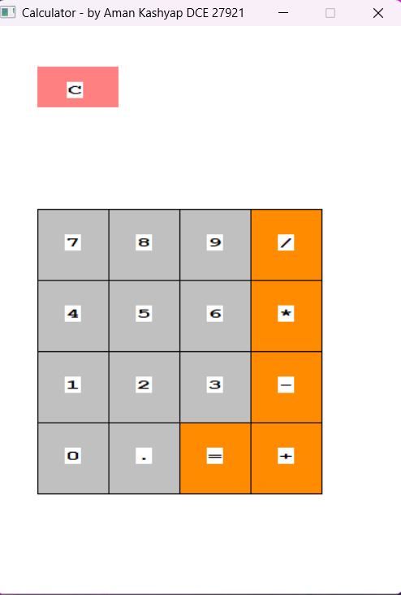
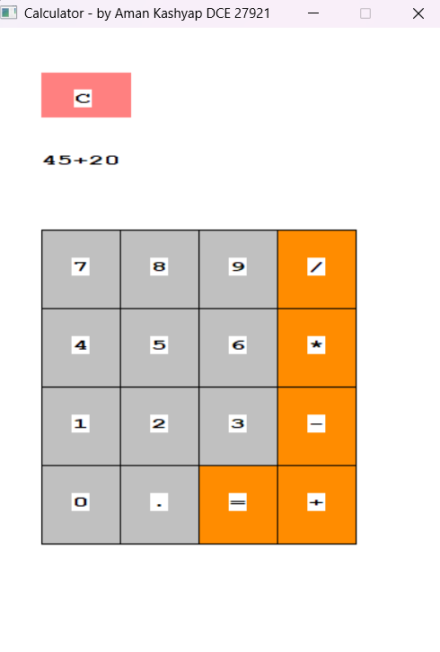
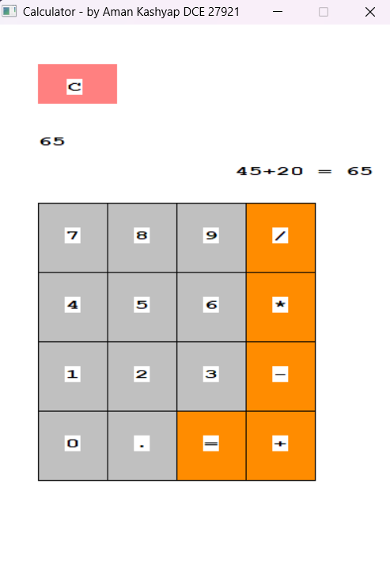
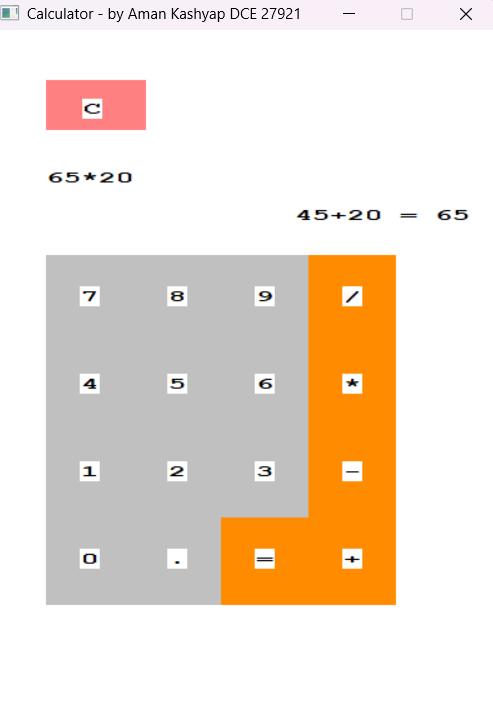
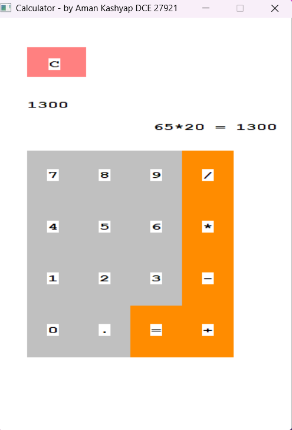

This project is a graphical calculator developed using C++ (WinBGI) and extended into a web-based portfolio using HTML5, CSS3, and JavaScript. It demonstrates UI rendering, event handling, and arithmetic expression evaluation.
The calculator supports real-time input handling, operator precedence, decimal calculations, and smooth graphical rendering. The web version replicates the same behavior for demonstration purposes.





This project successfully integrates low-level graphics programming with modern web technologies, demonstrating both problem-solving and UI development skills. It is suitable for academic submission and portfolio presentation.